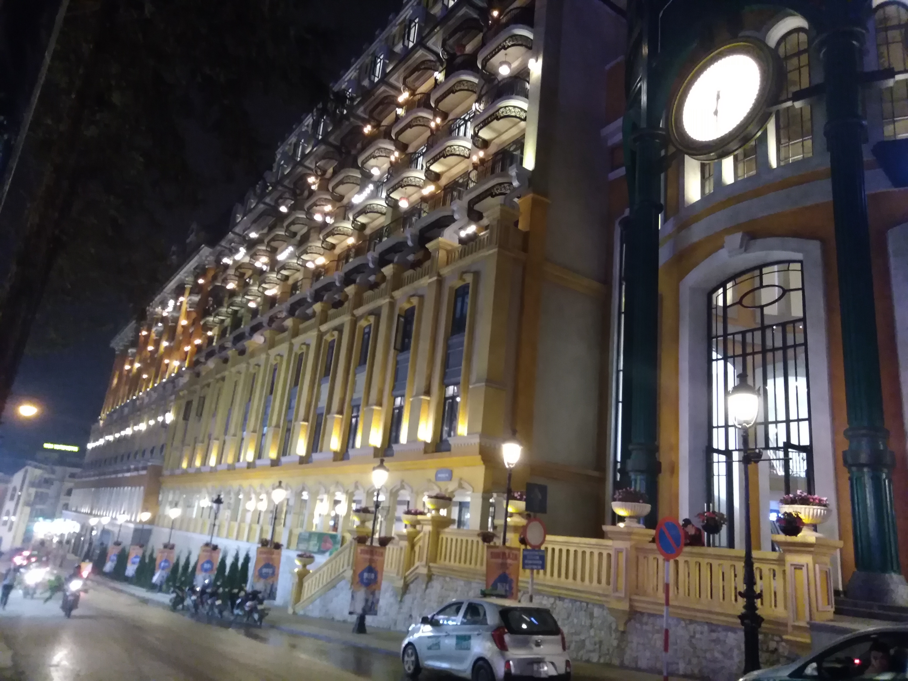
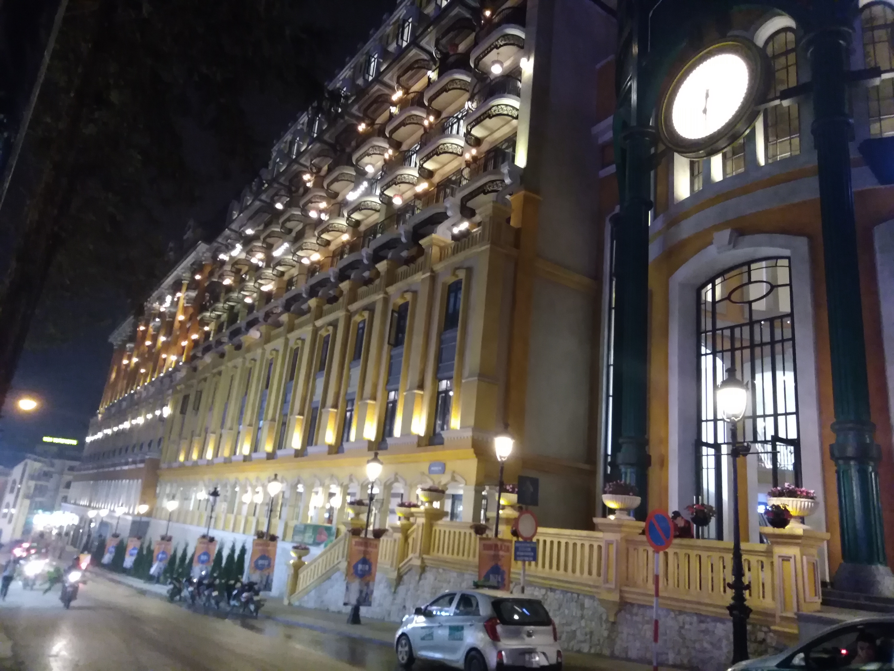

Sapa et le grand voyage vers le Laos
ou l'art de la réorganisation
Sapa
Depuis Ninh Binh, nous décidons de prendre un bus de nuit pour nous rendre à Sapa. C'est apparemment un endroit idéal pour faire quelques randonnées et explorer le nord-ouest du pays.
On arrive comme d'hab' avec une heure d'avance, et nous nous rendons donc à l'hôtel à 2h du mat' en espérant pouvoir dormir un peu avant la journée. Quelques heures dans un bon lit valent tellement plus que toutes ces heures dans les "sleeping bus" où définitivement, on ne dort pas vraiment.
Sapa est donc une ville de montagne où l'on retrouve l'atmosphère des villes de montagnes de chez nous. Il y a des châlets, et beaucoup de restaurants. L'offre touristique ici est vaste puisque Sapa est constamment cité dans les guides (d'ailleurs une tripotée de gros hôtels sont en train de se construire, enlevant un peu de charme au paysage). Et c'est vrai que le soir arrivant, avec la nuît et la fraîcheur, on n'oublie bien vite le Vietnam d'Ho Chi Minh ville ou d'Hanoï.
La première journée on loue un scooter pour explorer les alentours, et l'employé de la guesthouse nous rencarde sur les choses à faire en 2 roues. On suit donc ses conseils et nous allons visiter des points de vues sur la vallée, des cascades et une petite marche sont aussi au programme. Retrouver des paysages de montagnes nous fait extrêment plaisir et même si ça n'a rien de comparable avec les Alpes (faut pas abuser), on s'y sent un peu chez nous. La première journée est donc très positive, et on finira le tout avec une petite boisson chaude et un bon restau. Et on prolonge même notre séjour sur place, alors qu'on devait aller chercher un logement plus excentré pour se mettre vraiment au vert.
Pour la deuxième journée on se décide à tout faire à pied. De nombreux départs de randonnées sont possibles depuis la ville, apparemment. Et même si certains s'annoncent payant, on devrait pouvoir y trouver notre compte quelque part... et en fait non. Sortir de la ville pour les randos nécessite véritablement de payer pour quoique ce soit. Chaque chemin a son péage. On est ici enfermé dans Sapa et c'est un véritable racket qui s'opère si l'on a le malheur de vouloir aller marcher un peu. L'idée de payer encore pour simplement un randonnée ne nous plaît pas du tout, et pas moyen d'esquiver ces fichus péages. On déclare donc la journée de randonnée "journée de la loose" et on rentre tout penauds sur Sapa. On fait un arrêt par ce bâtiment assez incroyable au milieu de la ville, sorte de centre commerciale/hôtel/gare pour se donner l'impression d'avoir fait quelque chose. Une fois à la maison d'hôte on décide de préparer un peu la suite, et notre sortie prochaine du pays. On s'éloignera donc de Sapa le lendemain se dit-on, sauf que ...
Sauf qu'au détour d'un site internet, je tique sur quelque chose. On souhaite sortir du pays par Dien Bien Phu, au nord, le poste frontière le plus proche de Sapa. On a bien vérifié, c'est possible d'obtenir son visa pour le Laos par là. Oui mais c'est pour sortir du Vietnam que ça pose problème ! En effet ce poste frontière ne prend pas les evisas, ce que nous avons. Jamais nous aurions pensé que le problème aller être à la sortie d'un pays !!!
Donc là, ni une ni deux, branle-bas de combat, on change tous nos plans, il faut qu'on redescende à Hanoï pour prendre un bus pour Vientiane, capitale du Laos. 24h de bus annoncées, ça va faire mal. On annule donc notre prochain hôtel, adieu le vert et la nature, et re-bonjour Hanoï (t'es chouette mais tu ne nous avais pas manqué non plus).
La traversée vers le Laos
La traversée mériterait presque un article à elle toute seule. Mais pour que vous ne ressentiez pas le même ennui que nous dans ce bus, on va abréger. A Hanoï on cherche donc une compagnie de bus qu'on a déjà pratiquée, la Sinh Tourist, une des plus anciennes et sérieuses. Du coup, son succès a fait des jaloux et de nombreuses contrefaçons ont fleuri dans le vieux quartier d'Hanoï. On le sait, donc on se prépare, on regarde bien l'adresse, on regarde bien la devanture sur internet, il faut que se soit exactement pareil. On trouve ce qu'on veut, ça à l'air de correspondre. On prend donc nos billets pour l'après-midi. Pour un trajet de 24h, vaut mieux pas se louper... Ben on s'est loupé !!! Je ne sais pas encore bien où on a pêché, mais on s'est fait enfler par un ersatz de cette compagnie. On l'a très vite vu dès le minivan qui nous emmène à la gare routière, archi-bondé ! Et très vite ensuite on sent l'arnaque à plein nez, le standing n'est pas au rendez-vous. J'étais dans une colère...
Mais enfin, le trajet s'est bien déroulé. C'était long, certes, et on avait très peu d'info de la part de ceux qui officiaient le bus. Donc c'était un peu à la débrouille pour passer le poste frontière, mais ça s'est bien déroulé. Ah ! et un pneu crevé, un Michelin en plus (notre fierté française en a pris un coup), mais assez vite changé. Là on ne va pas se plaindre. Surtout, c'était l'occasion de rencontrer d'autres voyageurs, aussi désoeuvrés que nous, très sympathiques avec qui on fera un bout d'aventure.
Donc nous voici arrivés au Laos, et déjà depuis les fenêtres du bus, la campagne a l'air paisible. Plus paisible que le Vietnam qui nous aura fait suer une dernière fois.
Merci Vietnam, c'était vraiment très chouette, on t'a adoré. Et bonjour Laos, tu nous semble déjà très sympathique.


 

 <\div>
<\div>